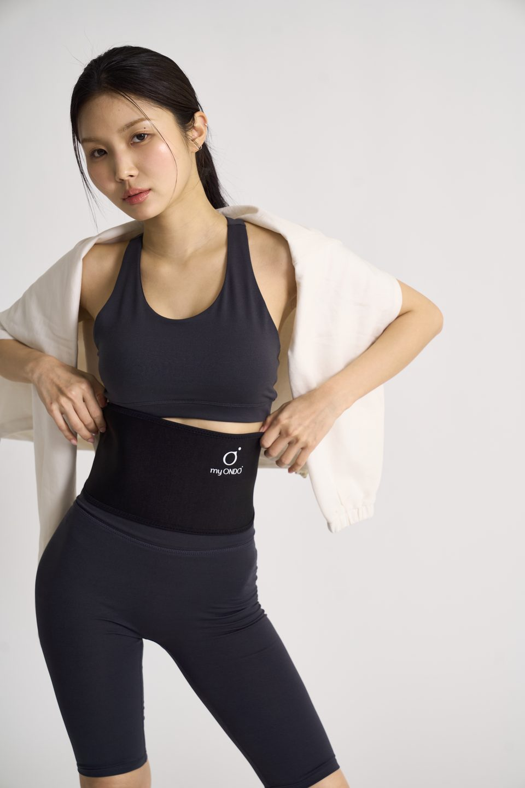
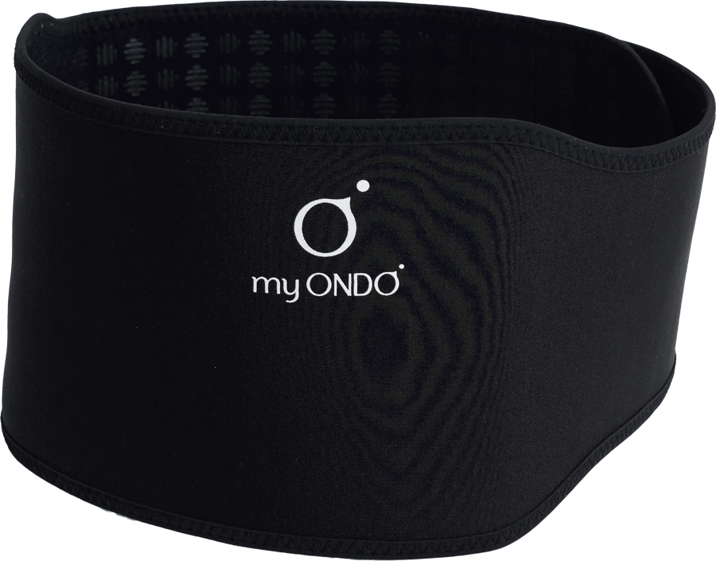

DAILY · WARMTH
입던 옷은 그대로,
안에 밴드 하나만
옷 입기 전 허리에 감아 벨크로로 고정하고,
그 위로 평소 옷을 입으면 됩니다.
물을 데우거나 충전할 일이 없습니다.

STEP 1
마이온도 밴드
+

STEP 2
입던 옷
착용 직후에는 열감이 없을 수 있으며, 따뜻함을 느끼는 시점과 세기는 사람마다 다릅니다.
물 데우기도, 충전도 필요 없이
허리에 두르는 보온 밴드
* 심부 전달·벗은 뒤 최대 10시간 지속은 브랜드 안내 기준이며, 사람마다 다릅니다.
전기도, 충전도 없이
필요한 건 오직 나의 체온

DAILY · WARMTH
옷 입기 전 허리에 감아 벨크로로 고정하고,
그 위로 평소 옷을 입으면 됩니다.
물을 데우거나 충전할 일이 없습니다.
STEP 1
마이온도 밴드
STEP 2
입던 옷
착용 직후에는 열감이 없을 수 있으며, 따뜻함을 느끼는 시점과 세기는 사람마다 다릅니다.
어릴 때부터 엄마는 배를 차게 하지 말라고
수없이 말했어요. 그 말을 흘려듣다가
손발과 배가 늘 차가워 오래 고생했죠.
4년 동안 엄마들, 어르신들과 건강 챌린지를
함께하며 알게 됐어요. 아무리 잘 먹고 운동해도
기본은 몸을 따뜻하게 지키는 일이라는 걸요.
내 딸들은 나처럼 고생하지 않았으면 하는 마음으로
가장 간편하게 체온을 지킬 방법을 찾다가
이 밴드를 발굴했습니다.
마이온도 대표 한해이
REAL REVIEWS
핫팩, 찜질기, 따뜻한 장비들? 다 써봤다 … 그 모든것들의 공통점은 하나 늘 그때 뿐이라는것, 금방 식어버린다는것 … 벨트를 푼 후에도 속에서 따뜻함이 유지되고 있었다. 늘 사용할때만 따듯하던 다른 제품과는 차원이 달랐다
한번 오른 체온은 잘 내려가지 않았어요 밴드를 벗은 후에도 37도를 유지했지요.
30분 이후부터 열감이 올라 오더니 마이온도를 탈거하고도 1시간 이상의 열감이 느껴 지더라고요
아침에 출근전에 2,30분정도 하고 빼고 나가면 차차 열이 은근하게 오름 넘 신기해!! … 둘러서 착용하면 겉으로 티 안남!
몸의 반응이 느린편이라서 거의 하루종일 착용하니 미지근한온도로 따수워서 좋았어요!! … 외출시도 여행시에도 이제 필수품이되었어요
핫팩은 한번쓰면 죄다 쓰레기잖아요 … 집에있는 다른 온열기기들은 손이 안가는데 이건 진짜 매일 매일 쓰거든요
※ 마이온도 공식몰 구매 리뷰 원문에서 발췌했으며(중략은 …), 맞춤법은 원문 그대로입니다.
개인의 사용 경험이며, 체감과 지속 시간은 사람마다 다릅니다.

보온 관련 공개 게시글·후기 사례를 바탕으로 재구성한 상황 예시이며,
마이온도 구매 후기가 아닙니다.
핫팩·물주머니·찜질기,
다 써 봐도 쓸 때만 따뜻하고
떼면 다시 차가워지는 이유!
뜨거운 물을 채워 쓰는 물주머니는 쓰고 나면 물을 버리고 말려야 합니다. 식으면 다시 채워야 하고요.
유선 제품은 콘센트 근처에서, 충전식 제품은 배터리를 챙겨야 합니다. 고정 장치 없이 배 위에 올려두는 제품은 움직이면 자리를 벗어나기 쉬워요.
일회용 핫팩은 한 번 쓰면 버려야 해서, 필요할 때마다 새로 챙겨야 합니다. 쓴 만큼 사야 하고, 쓴 만큼 쓰레기가 남습니다.
핫팩·물주머니·찜질기는 몸 바깥에서 열을 대 주는 방식이라, 떼고 나면 따뜻함도 금방 사라집니다. 쓰는 동안만 따뜻하고, 벗으면 배는 다시 차가워져요. 그래서 매번 다시 데우고, 다시 붙이게 됩니다.
제품군별 일반적인 사용 방식이며, 특정 제품의 성능을 비교한 내용이 아닙니다. 그래프는 이해를 돕기 위한 개념도입니다.
그래서 배 보온에는
쓰는 동안만이 아니라,
벗은 뒤에도 따뜻함이 남는
방법이 필요합니다.
체온을 몸속 깊은 곳까지 전하고
벗은 뒤에도 최대 10시간 온기가 머무는
마이온도를 소개합니다
* 심부 전달·최대 10시간 지속은 브랜드 안내 기준입니다. 지속 시간과 체감은 사람마다 다르며 보장하지 않습니다.

2026 리뉴얼 광물 도트
BURGUNDY DOT
밴드 안쪽에 촘촘히 찍힌 도트입니다.
상품정보에 표시된 재질은
그래핀·게르마늄·규소·티타늄 등이며,
2026년 도트 원료를 새로 바꿨습니다.
* 재질은 상품정보 표기 기준입니다.
충전·데우기 없음
몸에 닿는 도트 면
감아서 고정
하의로 덮어 입기
밴드 안쪽 광물 도트가 맨살에 닿아 내 몸의 체온을 받아들입니다.
체온을 받은 도트의 광물 소재가 원적외선을 내보냅니다.
겉만 뜨거운 열이 아니라 몸속 깊은 곳까지 온기가 전해지고, 벗은 뒤에도 한동안 남습니다.
약 40여 가지 광물을 융합한 NBT 융복합 기술
* 원리와 지속 시간은 브랜드 설명이며, 체감 시점과 정도는 사람마다 다릅니다.

전원이 없는 밴드라 '켜지는 순간'이 없습니다. 필요해지기 전에 미리 둘러 두세요.

브랜드 안내 기준으로, 한 시간 남짓에 느끼는 분도 있고 며칠 이상 걸리는 분도 있습니다.

과도한 열감이나 따가움·가려움·붉어짐이 생기면 착용을 멈추고 고객센터에 문의해 주세요.
브랜드 안내에 따르면, 벗은 뒤 샤워나 운동을 할 때 따뜻함을 다시 느끼는 경우가 있습니다. 느끼지 못하는 분도 있으며, 지속 시간을 보장하지 않습니다.
체감 시점과 정도는 개인마다 다르며, 제품의 효과를 보장하지 않습니다.
같은 배 보온이 아닙니다. 쓰는 방식부터 다릅니다.

물주머니·전기 찜질기·붙이는 핫팩의 일반적인 사용 방식 비교이며, 성능 비교가 아닙니다.
마이온도 밴드는 네오플란 원단 위에 광물 소재를 담은 도트를 촘촘히 올린 구조입니다. 2026년, 이 도트의 색과 원료를 새로 바꿨습니다.
Fabric
신축성·보온성이 좋은
합성고무 원단
Graphene
열을 빠르게 퍼뜨리는
탄소 신소재
Germanium
원적외선 방사 소재로
쓰이는 반도체 원소
Silicon
열을 잘 전달하는
반도체 원소
Titanium
가볍고 부식에 강한
금속 소재
Mineral Complex
여러 광물을 융합한
원적외선 방사 배합
Natural Mineral
온열 소재로 쓰여 온
광물·흙
* 소재 목록은 상품정보 표기 기준입니다. 각 소재의 설명은 소재의 일반적인 특성이며, 원적외선 방사는 브랜드 설명입니다. 이 설명은 착용 시 인체에 미치는 효과를 뜻하지 않습니다.
옷 입기 전, 허리에 감아 벨크로로 고정합니다.
도트 면을 몸 쪽으로
도트 면이 몸 쪽을 향하게 펼쳐 주세요. 도트 면이 맨살에 닿아야 합니다.
허리에 감고 벨크로 고정
들뜨지 않을 만큼만 감아 주세요. 세게 당기면 원단이 늘어나 도트가 상할 수 있어요.
밴드 위로 옷 입기
하의 허리선이 밴드를 살짝 덮도록 입을 수 있습니다.
착용 방법 예시는 리뉴얼 전 제품으로 촬영했습니다. 현재 제품의 안쪽 도트는 버건디입니다.
두른 직후에는 열감이 없을 수 있어요. 필요해지기 전에 미리 둘러 두세요. 마이온도는 코르셋이 아니니 배를 조이지 마세요. 과도한 열감·따가움·가려움·붉어짐이 생기면 바로 풀고 고객센터로 문의해 주세요. 골반이 큰 편이라면 허리에서 골반 라인을 따라 대각선으로 두르세요.
줄자로 허리둘레를 잰 뒤 아래 범위와 비교해 주세요.

M
L
허리둘레 84~88cm는 두 사이즈에 모두 해당합니다. 구매 전 고객센터로 문의해 주세요.
한국·미국·일본·중국에 등록된 관련 기술 특허입니다.


한국 특허 · 2016.05.24 등록
그래핀과 나노 무기물질을 이용한 자가발열성과 내기능성을 갖는 벨트 첨가용 물질
* 특허 등록은 기술에 대한 권리를 뜻하며, 제품의 효능이나 안전성을 인증하는 것은 아닙니다.
MADE IN KOREA
원단 생산 과정

데우는 수고는 내려놓고,
따뜻함은 나의 체온으로.myONDO
처음엔 열감이 거의 없을 수 있습니다. 먼저 도트 면이 맨살에 닿았는지, 너무 느슨하거나 조이지 않은지 확인해 주세요. 피부가 많이 건조하다면 브랜드 안내에 따라 밴드 안쪽에 물을 살짝 뿌린 뒤 착용해 보세요. 그래도 계속 느낌이 없다면 고객센터 1577-1857 또는 카카오톡 채널 'myondo'로 문의해 주세요.
사람마다 다릅니다. 브랜드 안내 기준으로, 한 시간 남짓에 느끼는 분도 있고 며칠 이상 걸리는 분도 있습니다.
열감이 불편하거나 따가움·가려움·붉어짐이 생기면 바로 밴드를 풀고 고객센터로 문의해 주세요.
브랜드 안내 기준으로, 아침·저녁 뜨거워지기 시작한 시점부터 1~2시간씩 착용하기를 권합니다. 오래 계속 두르면 따뜻함이 덜 느껴질 수 있어요. 그럴 땐 쉬었다가 다시 착용해 주세요.
착용 후 도트 모양 자국이 남을 수 있습니다. 따가움이나 가려움이 함께 있거나 불편하면 착용을 멈추고 문의해 주세요.
세탁기는 피해 주세요. 젖은 수건으로 가볍게 닦고, 꼭 필요할 때만 물로 손세탁한 뒤 그늘에서 말립니다. 물티슈는 쓰지 마세요. 도트가 닳거나 손상된 것 같다면 고객센터로 문의해 주세요.
브랜드 안내에 따라 아래에 해당하면 착용하지 마세요.
지병이 있거나 치료 중이라면 사용 전 전문가와 상의하세요. 마이온도는 의료기기가 아니며, 질병의 예방·치료를 목적으로 사용하지 마세요.
상품 수령 후 7일 이내, 미개봉 상태일 때 가능합니다. 단순 변심은 왕복 배송비가 부과됩니다.
마이온도는 의료기기가 아닙니다.